GACO · Design System · rodada 2 · 30/09/2026
Nove agentes trabalharam nesta rodada. Cinco pesquisaram e confrontaram as regras atuais (fluxos, identidade, salvamento, jornadas de sete perfis, signos e navegação). Três desenharam uma versão completa cada, com identidade e navegação diferentes. Um crítico independente confrontou as três. Abra cada versão, compare as telas abaixo e responda às perguntas do fim.
| Tema | Primeira proposta | Rodada 2 (as três versões) |
|---|---|---|
| Identidade | Escuro com laranja em gradiente, brilho de fundo, Syne | Três direções ligadas ao mundo do cliente; sem gradiente, sem brilho, sem os tons prontos do Tailwind |
| Home | Fileira de KPIs | Pessoa, equipe com presença, feed com reconhecimento e ciência, "Para você" com prazo e botão. Nenhum KPI |
| Salvar | Página de edição separada com barra fixa | Edição no próprio registro (por campo e por seção), barra de salvar que só aparece com alteração, "Salvar ▾" com "e ir para o próximo" |
| Vai e volta | Lista, detalhe, edição, volta | "14 de 63" com anterior e próximo; a lista lembra filtro e posição; prévia ao lado na carteira (V3) |
| Suporte | Três colunas genéricas | Gesto do WhatsApp: tiques, áudio, foto, "/" para respostas rápidas, nota interna, "Enviar ▾" com a próxima da fila |
| Academy | Player com lista de aulas | Faculdade: período letivo, disciplinas, notas N1/N2, frequência com mínimo de 75%, calendário acadêmico, certificado |
| Navegação | Só o Modelo D | Três arranjos para comparar: trilho à esquerda (V1), topo refinado (V2), lateral de 240px (V3) |
Clique numa captura para ver em tamanho real. Nas capturas da V1 e da V3 as fontes do Google não carregaram no ambiente de captura; nos arquivos abertos no navegador elas carregam.
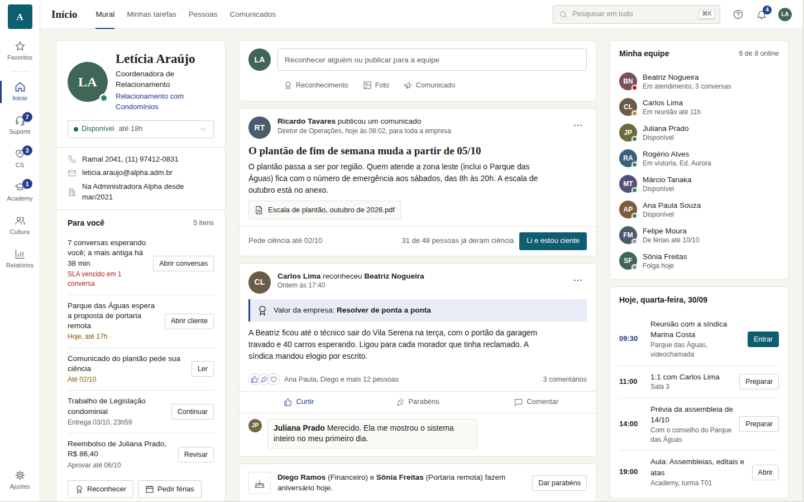
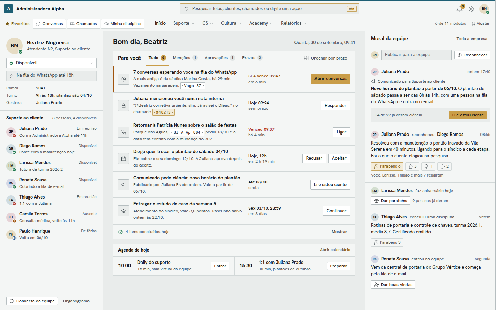
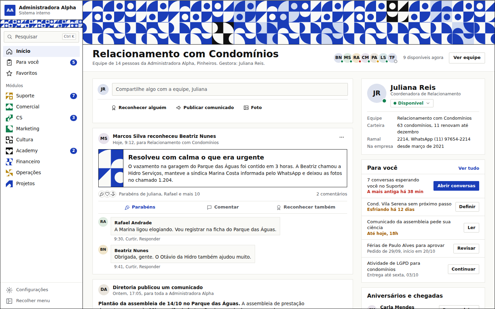
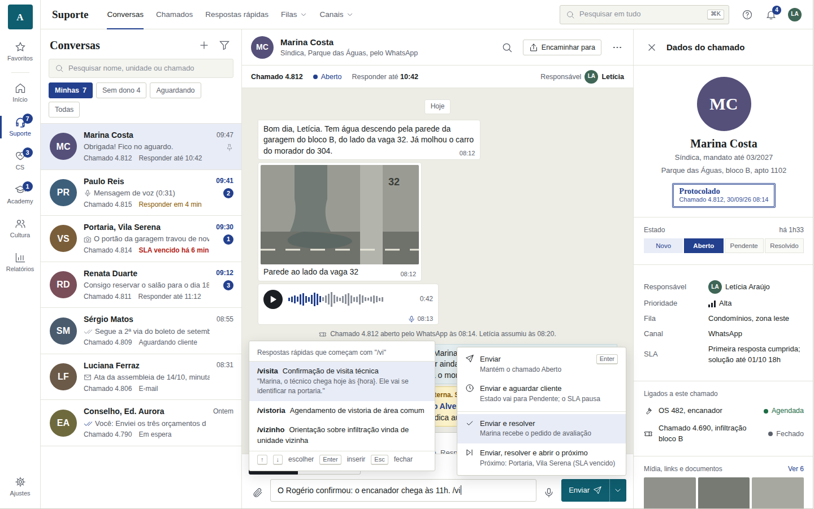
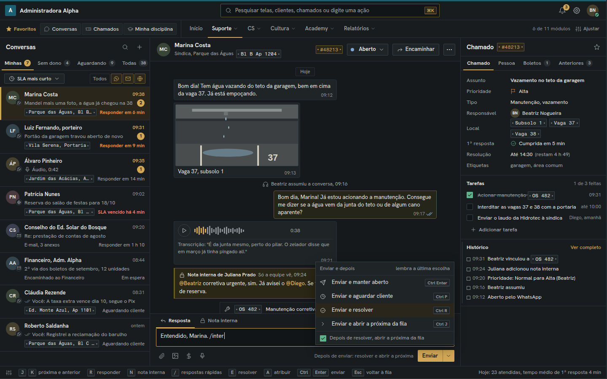
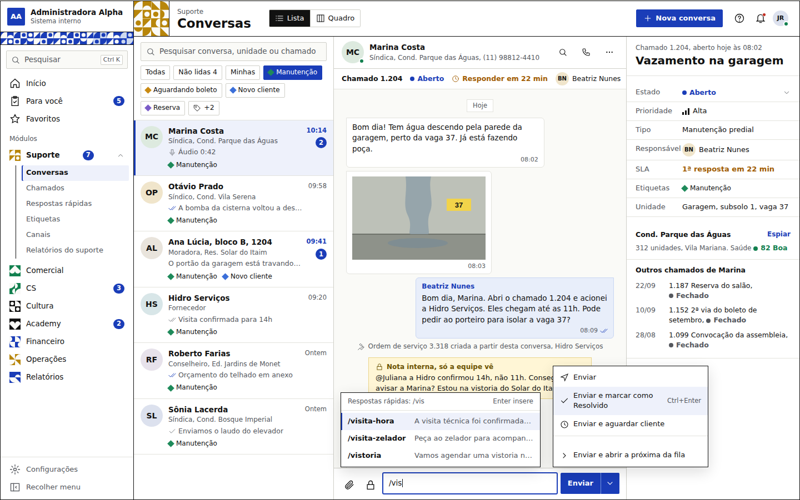
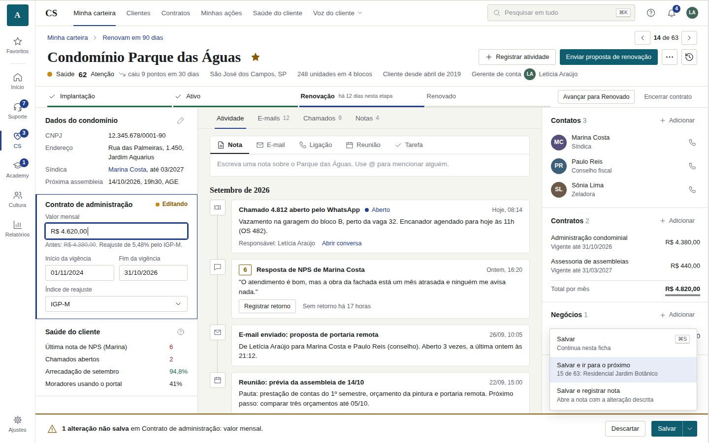
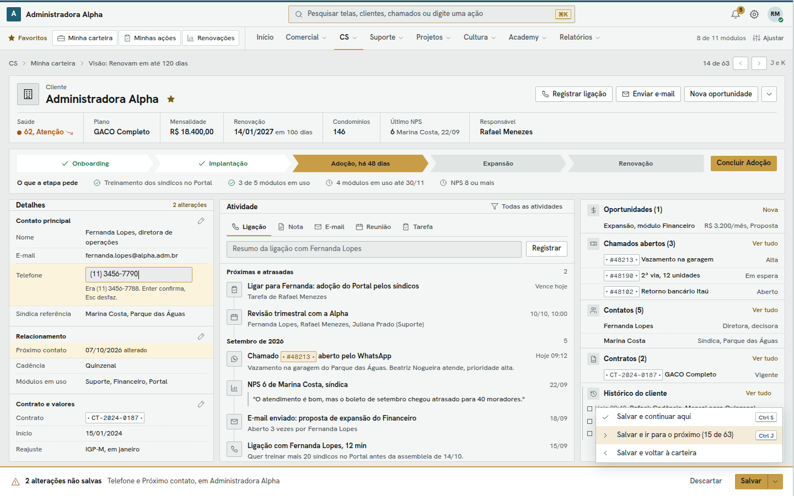
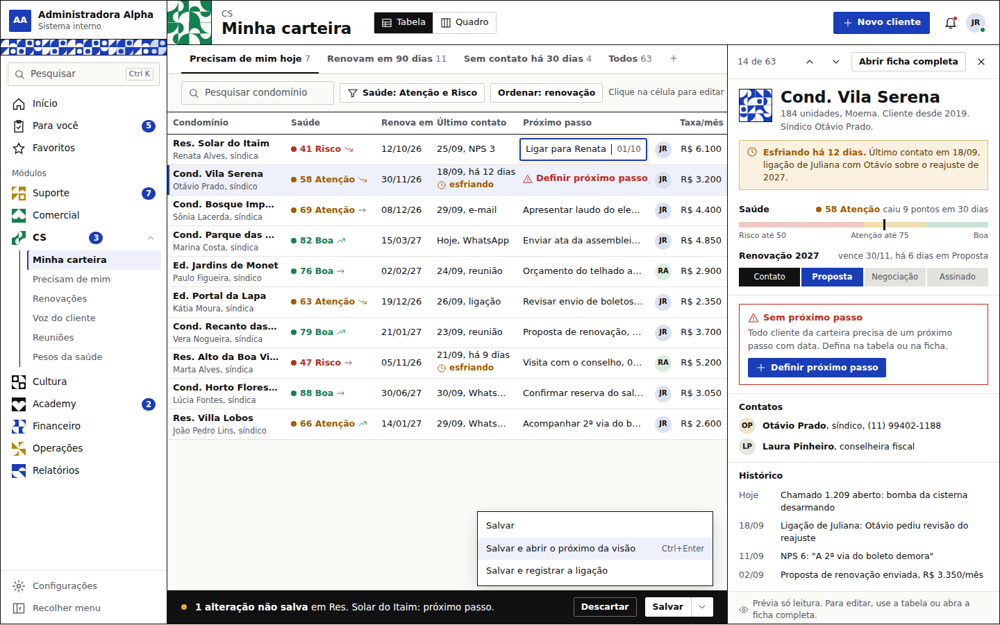
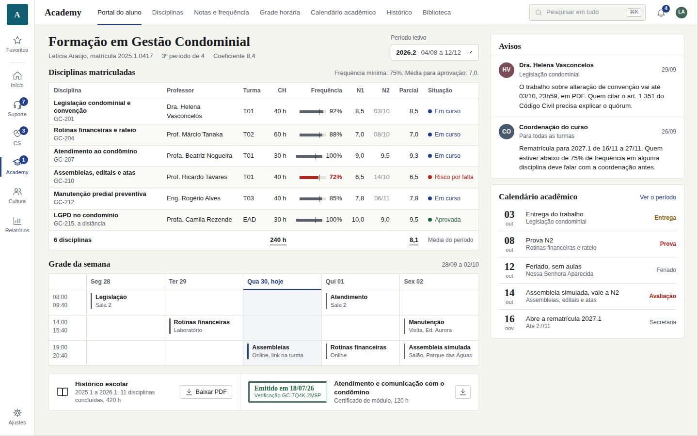
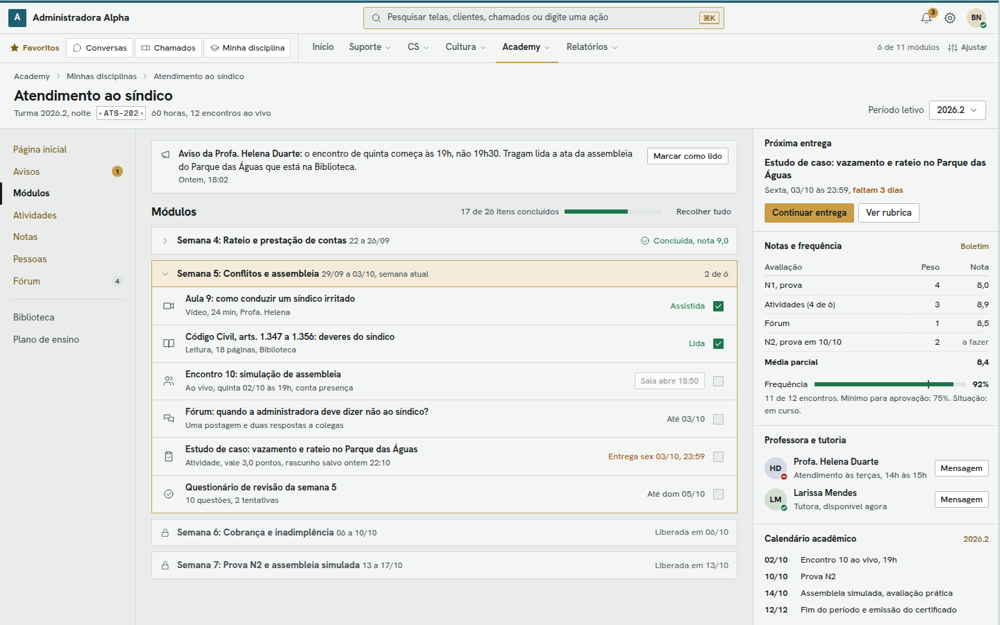
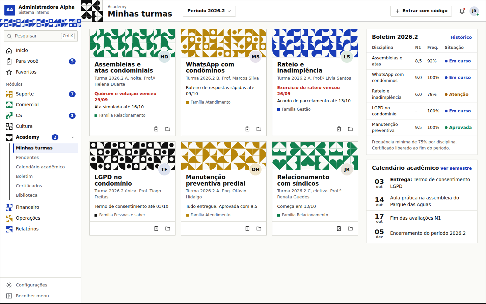
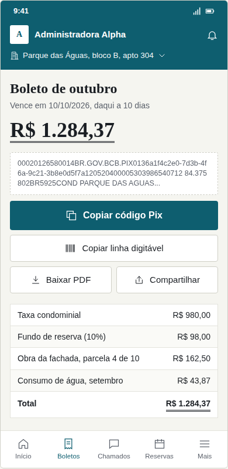
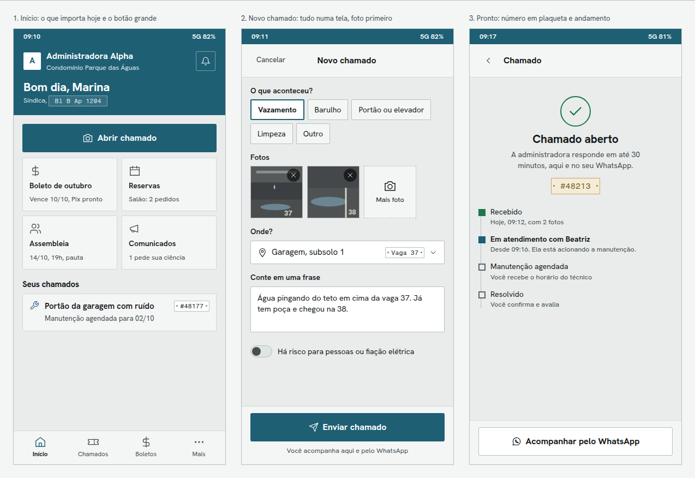
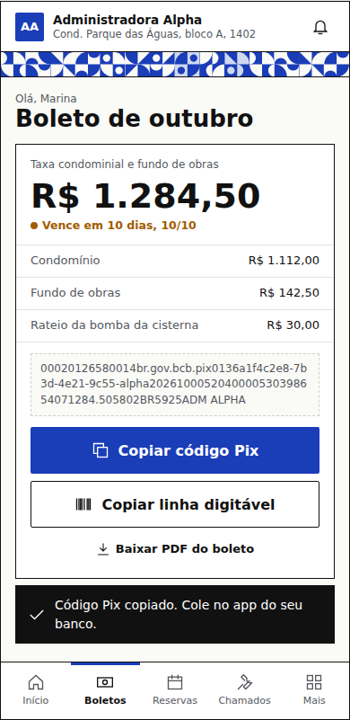
Nenhuma versão serve inteira. Cada uma acertou o que as outras erraram.
Mais fiel ao pedido tela a tela
Identidade quieta demais
Melhor Suporte para quem opera
A Home virou fila de tarefas
Identidade mais memorável
A que mais decora
| Perfil | Serve melhor |
|---|---|
| Atendente, 40 conversas por dia | V2 |
| Gerente de CS | Carteira da V3 com a ficha da V1 ou da V2 |
| Colaborador comum | V1 |
| Síndico no celular | V2 para chamado com foto; V1 para boleto |
A cor do cliente nunca pinta estado, contador, etiqueta ou bolha de conversa. Nas três versões ela chegou a conflitar: vinho encostando no vermelho de "vencido", laranja escurecido virando o âmbar de "atenção", e na V3 o azul servindo ao mesmo tempo de marca, estado e família de módulo.
Risco: colcha de retalhos. Exige fixar um só conjunto de cores, tipos e medidas antes de montar.
Menos risco de execução e de mudança para quem já usa; menos humana na identidade.
E uma dúvida de escopo que o crítico levantou: no CS, o "cliente" é o condomínio ou a administradora? Na V2, a Administradora Alpha aparece como dona do sistema e como cliente na mesma tela.
Os relatórios completos dos agentes estão na pasta do projeto, em GACO_Design_System/rodada-2/relatorios/: A1 pesquisa de fluxos, A2 pesquisa de identidade, A3 fluxos e salvar, A4 jornadas, A5 signos e navegação, C1 crítica das versões.